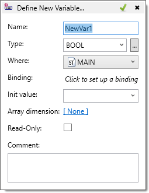

This applies to ST, LD and FBD programs and also to Variables editor and Structures editor.
When the “Define Variable” command is chosen from the context menu, a popup dialog appears that allows the definition of a new variable with all its properties.

The properties that can be configured from this dialog are:
|
Property |
Description |
|
Name |
Variable name |
|
Type |
Variable type. Select from the drop-down or press the “…” button to open a more complex type browse dialog. Default is suggested automatically. |
|
Where |
Variable group – select from the drop-down. Default is suggested automatically. |
|
Binding |
Variable binding. None by default. |
|
Init value |
Variable initial value, if applicable |
|
Array dimension |
Specify array dimensions |
|
Read-only |
Variable will be created with read-only attribute |
|
Comment |
Variable comment. This text will appear as tooltips in ST, LD and FBD editors |
Note: If this dialog is invoked inside a program editor, after it is closed it will insert automatically the variable symbol name at the current location in the program editor.